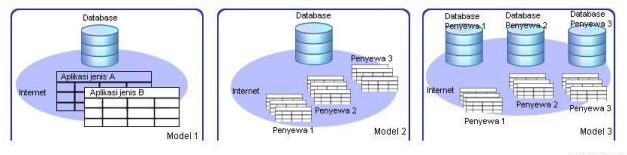

Singkatan SaaS adalah …
a. Software as a server
b. Software as a service
c. Service as a software
d. Server as a software
Singkatan dari ASP adalah...
a. Application server program
b. Application service program
c. Application service provider
d. Application server provider
Software bersifat terpusat/tersentral sehingga pengguna dapat mengakses dimana saja adalah...
a. Karakteristik SaaS
b. Implementasi SaaS
c. Pengembangan SaaS
d. Model SaaS
Yang termasuk keuntungan penggunaan SaaS adalah...
a. Meningkatkan produktivitas bagi pengguna
b. Melemahkan produktivitas bagi pengguna
c. Mengkonfirmasi produktivitas bagi pengguna
d. Mengupdate produktivitas bagi pengguna
Maksud dari jaringan bersifat private adalah...
a. Jaringan yang digunakan oleh umum
b. Jaringan yang berbayar
c. Jaringan umum dan berbayar
d. Jaringan yang hanya diakses oleh orang tertentu
Contoh faktor keberhasilan dalam implementasi dan pengembangan SaaS adalah...
a. Update secara berkala
b. Optimasi dan multi tenant
c. Konfirmasi pengupdatean
d. Lemahnya penggunaan
Singkatan SOA adalah...
a. Server oriented architecture
b. Service optimasi architecture
c. Server oriented application
d. Service oriented architecture
Pada SaaS lapisan tambahan yang tidak dimiliki oleh software dekstop adalah...
a. Server
b. Service
c. Meta data service
d. Oriented architectur
Perhatikan gambar dibawah ini

Dari gambar diatas manakah yang menggambarkan penyewa memiliki aplikasi dan database yang berbeda...
a. Model 1
b. Model 2
c. Model 3
d. Semua benar
Pay as you use service artinya...
a. Pembayaran atas software/lisence yang dihitung berdasarkan periode
b. Pembayaran secara berkala
c. Pembayaran bersama
d. Pembayaran yang dihutangkan
https://forms.gle/3PAWHW5ME5QA2TUcA